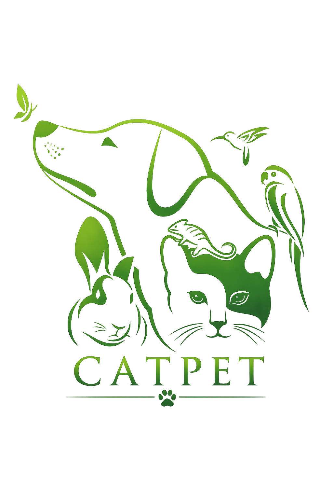

Protegendo todas as espécies
Conheça organizações que trabalham diariamente para proteger, resgatar e cuidar dos animais em todo o Brasil.
Apoie uma ONG, torne-se voluntário ou faça uma doação. Cada contribuição faz a diferença.
Voltar para a página inicial